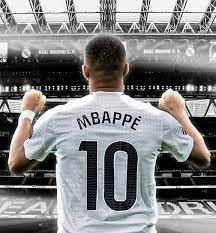
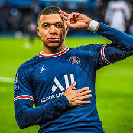
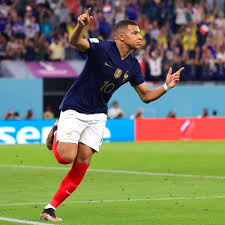

Kylian Mbappé lleva el dorsal 10 porque en el fútbol ese número simboliza creatividad, liderazgo ofensivo y responsabilidad para generar juego y goles. Es un número asociado a los jugadores más determinantes del equipo. La elección también responde a razones de imagen y marketing: el 10 identifica a figuras globales y facilita la conexión con la afición, la camiseta y la marca personal del jugador. Aceptar el 10 en el Real Madrid implica asumir expectativas y presión, además de la ambición de convertirse en referente del club y dejar una huella en su historia.El 10 suele ser el número de la figura creativa o el atacante más importante del equipo. Después del retiro de jugadores como Zidane y el cambio generacional, Mbappé asumió ese rol.

Kylian Mbappé sorprendió al mundo cuando marcó un espectacular gol de tiro libre contra el Barcelona, un tipo de anotación que no suele ser su principal especialidad. La jugada nació tras una falta cerca del área culé, en una posición ideal para un rematador potente. Todos esperaban un disparo directo de otro jugador, pero Mbappé tomó el balón con total seguridad.
Al momento de cobrar, Mbappé mostró una calma absoluta. Dio unos pasos hacia atrás, miró fijamente la barrera y al portero, y esperó el silbato. Su postura dejaba claro que iba a intentar algo diferente: más precisión que fuerza. Cuando arrancó la carrera, el estadio contuvo el aliento.
El disparo fue impecable. Mbappé golpeó el balón con efecto y lo envió por encima de la barrera, colocándolo en un espacio imposible para el arquero. El balón viajó rápido, curvándose hacia el ángulo mientras el portero del Barcelona se estiraba sin poder alcanzarlo. La pelota terminó en la red, desatando la euforia de los hinchas.
El gol no solo fue espectacular por su ejecución, sino también por el momento del partido. Llegó cuando su equipo necesitaba una jugada que cambiara el ritmo del encuentro y devolviera la confianza. Ese tiro libre demostró que Mbappé no solo es velocidad y definición en movimiento, sino también talento técnico para sorprender en jugadas de balón parado. Tras el gol, la celebración fue intensa: Mbappé corrió hacia la esquina con los brazos abiertos, mientras sus compañeros lo rodeaban. Ese tanto quedó grabado como uno de los más especiales en su carrera, no solo por el rival y la calidad del disparo, sino porque reafirmó su capacidad para aparecer en los momentos grandes.
Kylian Mbappé llegó al Paris Saint-Germain en 2017, inicialmente cedido desde el Mónaco y luego comprado de forma definitiva. Su llegada fue uno de los fichajes más costosos de la historia, pero desde el primer momento dejó claro que estaba preparado para convertirse en la nueva estrella del club. Con apenas 18 años, impactó por su velocidad, regates y madurez dentro del campo.
En el PSG formó una de las delanteras más temidas del mundo junto a Neymar y, más tarde, Lionel Messi. Mbappé se transformó rápidamente en el máximo referente ofensivo del equipo, anotando goles decisivos en Ligue 1, Champions League y copas nacionales. Su constancia le permitió convertirse en el máximo goleador histórico del club, superando a Edinson Cavani.
Uno de sus momentos más recordados en el PSG fue la temporada 2019-2020, cuando el club llegó por primera vez a la final de la Champions League, aunque finalmente perdieron ante el Bayern Múnich. Aun así, Mbappé fue clave en el camino del equipo, mostrando liderazgo y personalidad en los partidos más importantes. Tras siete años en París, Mbappé se despidió en 2024 dejando un legado enorme y siendo considerado la figura más influyente del club en la era moderna. Su paso por el PSG marcó una etapa histórica, en la que evolucionó de joven promesa a superestrella mundial.

Kylian Mbappé debutó con la selección de Francia en 2017, cuando apenas era un adolescente, pero desde sus primeros minutos quedó claro que estaba destinado a ser una de las grandes figuras del país. Su velocidad, determinación y madurez futbolística llamaron rápidamente la atención del entrenador y de todo el entorno del fútbol francés.
Su momento de explosión llegó en el Mundial de Rusia 2018, donde fue una de las estrellas más jóvenes del torneo. Mbappé marcó goles decisivos, incluyendo uno histórico contra Argentina en octavos y otro en la final contra Croacia. Con solo 19 años, se convirtió en campeón del mundo y en el segundo adolescente de la historia en marcar en una final después de Pelé.
A partir de ese torneo, Mbappé pasó de ser una promesa a convertirse en el referente ofensivo absoluto de Francia. Su capacidad para desequilibrar partidos lo hizo indispensable en todas las competiciones internacionales, como la Eurocopa y la Liga de Naciones. Con el tiempo, asumió cada vez más responsabilidad dentro del grupo.
El Mundial de Qatar 2022, Mbappé volvió a demostrar su grandeza. Terminó como el máximo goleador del mundial y protagonizó una de las mejores actuaciones individuales de la historia al marcar un hat-trick en la final contra Argentina. Aunque Francia no ganó el título, Mbappé quedó consolidado como uno de los mejores jugadores del planeta. Gracias a su liderazgo, profesionalismo y rendimiento constante, Mbappé fue nombrado capitán de la selección francesa en 2023. Con el brazalete, ha mostrado un estilo de liderazgo moderno: comunicativo, directo y muy enfocado en motivar a los jóvenes que vienen detrás.
Hoy, Mbappé es considerado el jugador más importante de Francia y uno de los símbolos de la nueva generación. Su rol no es solo marcar goles, sino representar al país, inspirar a nuevos talentos y mantener a Francia entre las mejores selecciones del mundo. Su historia con "Les Bleus" todavía continúa, y promete muchos capítulos más.